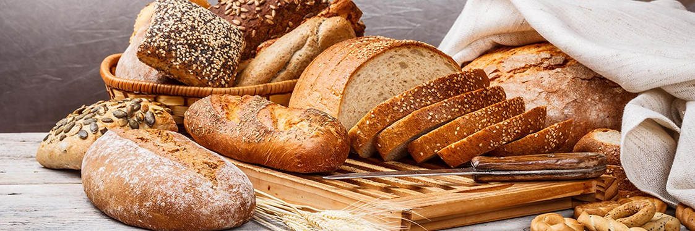
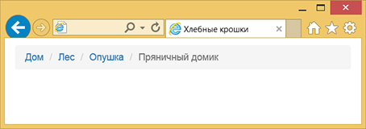

Хлебные крошки — это разновидность навигации,
которая помогает посетителям понять, где они
находятся на сайте и быстро перемещаться
по иерархии веб-страниц.
Обычно хлебные крошки отображаются в виде
цепочки ссылок, разделённых между собой
специальными символами
(например: «>», «/» или «→»).
Первой в цепочке ссылок, как правило,
идёт главная страница, а последней —
текущая веб-страница.
Вместо надписи «Главная страница»
также применяют изображение домика.

Обратите внимание, что последний пункт
не является ссылкой, поскольку указывает
на текущую веб-страницу.
Разметка хлебных крошек обычно делается
с помощью списков <ul> или <ol>,
каждая ссылка вставляется внутрь
пункта списка <li>.
Для последнего пункта списка ссылка не нужна,
поэтому вместо элемента <a>
используется <span>.
Поскольку хлебные крошки служат формой навигации,
их рекомендуется поместить внутрь элемента
<nav>, снабдив его атрибутом
aria-label с текстовой подсказкой.
<nav aria-label="Хлебные крошки">
<ol class="breadcrumb">
<li>
<a href="/">Главная</a>
</li>
<li>
<a href="/catalog/">Каталог</a>
</li>
<li>
<a href="/catalog/electronics/">
Электроника
</a>
</li>
<li aria-current="page">
<span>Хлебные крошки</span>
</li>
</ol>
</nav>
Перед превращением списка в хлебные крошки
сперва следует сделать сброс стилей,
обнулив пространство вокруг списка
и убрав нумерацию.
.breadcrumb {
margin: 0;
padding: 0;
list-style: none;
}
Затем превращаем список в горизонтальный,
добавив в класс breadcrumb свойство
display со значением flex или inline-flex.
Разница между значениями следующая:
- flex — делает хлебные крошки на всю ширину области;
- inline-flex — ширина хлебных крошек соответствует их содержимому.
Обратите внимание, что разница будет заметна
только при использовании фонового цвета
под хлебными крошками.
По умолчанию flex-элементы не переносятся
на другую строку, поэтому это поведение
следует исправить через свойство flex-wrap.
Разделители между ссылками также устанавливаются
через стили, что удобно, поскольку не требуется
каким-либо образом менять исходный код HTML.
Символ разделителя добавляется с помощью
свойства content и псевдоэлемента ::after.
.breadcrumb > li::after {
content: "→";
color: orange;
}
Здесь мы используем стрелку и делаем её
оранжевой через свойство color.
После последнего пункта стрелка не нужна
и она убирается комбинацией свойства content
со значением none и псевдокласса :last-child.
.breadcrumb > li:last-child::after {
content: none;
}